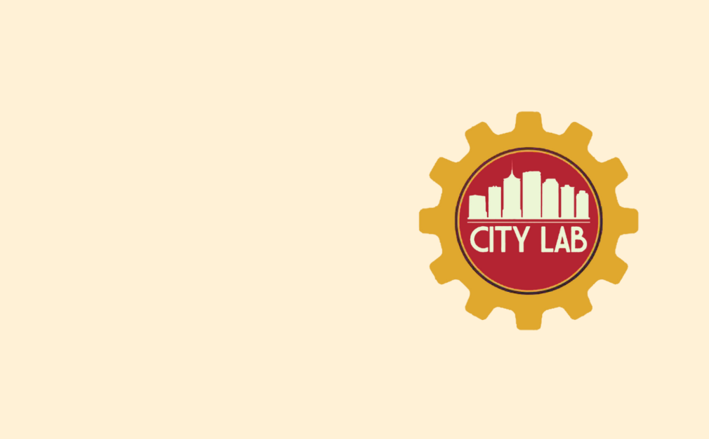

Interactive Science Learning
City Lab
Community-centered learning initiative focused on public engagement, experiential STEM education, and helping students apply design thinking to real-world challenges.
Overview
City Lab is an educational job program developed for Tulsa Public Schools students to help them identify real-world problems, propose creative solutions, and present ideas within a design-thinking framework. The program emphasizes leadership development, STEM practices, collaboration, and creative problem-solving to better prepare students for college, careers, and young adult life.
My Contributions
Program Development
Coordinated and facilitated STEM learning programs designed to support under-resourced high school students through hands-on educational experiences.
Curriculum & Educational Development
Developed curriculum materials and learning activities focused on STEM engagement, college readiness, and student academic support.
Community Partnerships & Mentorship
Collaborated with schools, educators, and community organizations to support mentorship initiatives, career exploration, and student success programming.
Program Materials
I collaborated on the development of program materials including a comprehensive program proposal and virtual facilitation guide. These materials outlined the curriculum structure, learning goals, activity planning, and facilitation approaches used to support the program’s implementation.
View Program Proposal → View Virtual Facilitation Guide →Reflection
City Lab strengthened my interest in public science engagement and the role experiential learning can play in fostering curiosity, community interaction, and real-world problem-solving skills among youth.
This project was developed collaboratively with interdisciplinary teams of educators, developers, artists, and researchers.